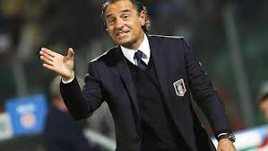
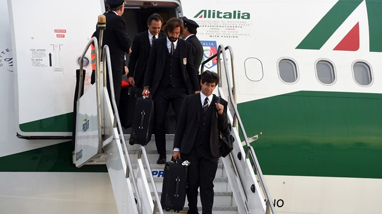

.jpg)
O técnico da seleção italiana, Cesare Prandelli, ficou satisfeito com a equipe após a vitória por 5 a 3 contra o Fluminense, neste domingo (08). "Vimos coisas interessantes, sobretudo com os atacantes. A condição está boa, mas é preciso ter mais coragem para recuperar a bola. Para a estreia com a Inglaterra, seremos brilhantes", disse o técnico. Apesar da vitória, a defesa ainda precisa de acertos..
Contra a equipe brasileira, o jogo foi um bom último teste para a estreia para o Mundial. Como o jogo não foi considerado oficial, não vale dizer que a Itália saiu do jejum de sete partidas sem vitórias em amistosos. Porém, a partida teve um clima de jogo "de verdade": 18 mil torcedores, a maioria torcendo pela equipe local, bastante animada.
Fonte: Ansa
Italia e Holanda desembarcam no Rio de Janeiro, enquanto Bósnia pousa em São Paulo. Marfinenses pousam em Campinas e rumam para período de preparação em Águas de Lindóia, no interior paulista.
Duas seleções europeias desembarcaram no Rio de Janeiro na manhã desta sexta-feira. A primeira a chegar foi a Holanda,
seguida pela comitiva da Itália, ambas na Base Aérea do Galeão, na Ilha do Governador, Zona Norte da cidade.
O avião com os holandeses pousou por volta de 5h30. Cerca de uma hora e 45 minutos mais tarde, a comitiva, for mada
por aproximadamente 50 pessoas, entre jogadores, comissão técnica e dirigentes, deixou o aeroporto e se deslocou de ônibus
até o hotel Cezar Plaza, na Zona Sul, escoltada pela polícia e até pelo Exército, sem ter contato com a imprensa.
Por volta de 7h15, foi a vez de a seleção italiana desembarcar no mesmo local. Assim como foi com a Holanda, houve forte
policiamento na saída do aeroporto até o hotel, mas sem qualquer tumulto. A equipe ficará concentrada em Mangaratiba,
município que faz parte da Região Metropolitana do Rio.
Durante o trajeto, o atacante italiano Mario Balotelli filmou uma favela com seu celular e publicou o vídeo em sua conta no Instagram,
comentando: “Primeiras imagens do Rio. Acabamos de chegar! Estamos indo até o hotel”.
A Itália enfrenta o Fluminense no sábado, em jogo amistoso em Volta Redonda. A equipe integra o chamado “grupo da morte” deste Mundial,
formado por Inglaterra, Itália, Uruguai e Costa Rica. O primeiro treino do time no país está marcado para a tarde desta sexta.
Já a Holanda não tem mais amistosos pela frente. A Laranja Mecânica está no grupo B, ao lado de Chile, Austrália e Espanha, adversária da estreia.
Fonte:superesportes.com.br